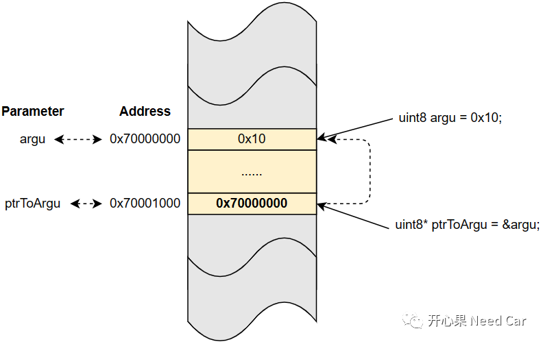

开心果 Need Car · 2023-01-04T09:29:00+08:00 · 微信原文
嵌入式开发，C语言是基础，而C语言的灵魂就是指针，如果不会使用指针，代码效率势必大打折扣。对于指针，想必都有所耳闻，指针变量就是一个指向某块内存地址的变量。首先，指针变量占用一块内存地址（eg：0x70001000），再次，在指针变量占用的这块内存地址上存放的内容是一个地址（eg：0x70000000），通过这个地址，可以知道这块地址上存放的内容（0x10），如下所示：

如上图，是我们对指针最初的认识，除了具体数据类型的指针以外，还有一种指针类型比较特别：void*。void*特别在哪呢？在工程开发中，又如何使用呢？
1、void*指针特点
void*指针也叫无类型指针，它可以指向任何类型指针，前提：需要强制类型转换。注意：void*指针不是空指针。
空指针没有指向，一般会将用不到的指针定义成空指针，避免误操作；
void * 指针是有指向的指针，只是它指向的数据类型暂不确定。
既然是指针，就会指向一块地址，void*也不例外，但是，由于其特殊性，未有事先说明自己指向的类型，所以，在使用前，需要强制告知其指向的类型。
（一）任何类型的指针都可以赋值给void*
int argu_int = 10;short argu_short = 20;void* ptr = &argu_int;ptr = &argu_short;
（二）void*使用前需要强制类型转换，即：显式的告知无类型指针变量需要指向的指针类型
void Func_Uint8Copy(const void* _des, void* _src, uint32 _len){/* 使用前，强制数据类型转换 */uint8* src_ = (uint8*)_src;uint8* des_ = (uint8*)_des;if((src_ != nullptr) && (des_ != nullptr) && (_len > 0)){do{*(des_)++ = *(src_)++;}while(((uint8*)src_ - (uint8*)_src) < _len);}}
2、void*在工程开发中的应用
typedef void(*Func_Ptr)(const void* _des, void * _src, uint32 _len);typedef struct{uint8 status;uint8 RxArr[8];uint8 TxArr[8];Func_Ptr Pre_Callout_Func;Func_Ptr Post_Callout_Func;}Module_Handle_T;
如上的示意代码中，设计的模块，前后各预留一个Callout，且函数指针的入参使用void*，这样可以使得传入的参数为任何类型，极大的增加了代码的灵活性。
（一）void*的工程应用
目的：Copy不同类型的数据
typedef bool(*Func_Ptr)(const void* _des, void * _src, uint32 _len);bool Func_Uint8Copy(const void* _des, void* _src, uint32 _len){/* 使用前，强制数据类型转换 */uint8* src_ = (uint8*)_src;uint8* des_ = (uint8*)_des;bool ret = false;if((src_ != nullptr) && (des_ != nullptr) && (_len > 0)){do{*(des_)++ = *(src_)++;}while(((uint8*)src_ - (uint8*)_src) < _len);ret = true;}return ret;}bool Func_Uint16Copy(const void* _des, void* _src, uint32 _len){uint16* src_ = (uint16*)_src;uint16* des_ = (uint16*)_des;bool ret = false;if((src_ != nullptr) && (des_ != nullptr) && (_len > 0)){do{*(des_)++ = *(src_)++;}while(((uint16*)src_ - (uint16*)_src) < _len);ret = true;}return ret;}
如上的代码中，通过函数指针，可以指向不同的函数，对不同的数据类型进行Copy。而在传参的时候，在根据具体的函数实现，强制数据类型转换，而不用改动模块的数据结构。当然，也可以将数据类型强制转换成自定义的数据结构（struct）。
void* memcpy(void* pvTo, const void* pvFrom, size_t size);void* memset(void* buffer, int b, size_t size);void* malloc(size_t size);......
往期精彩回顾